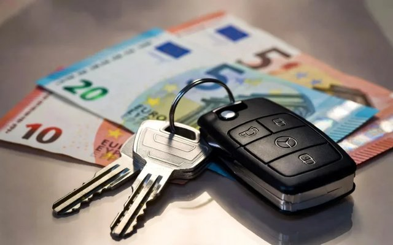
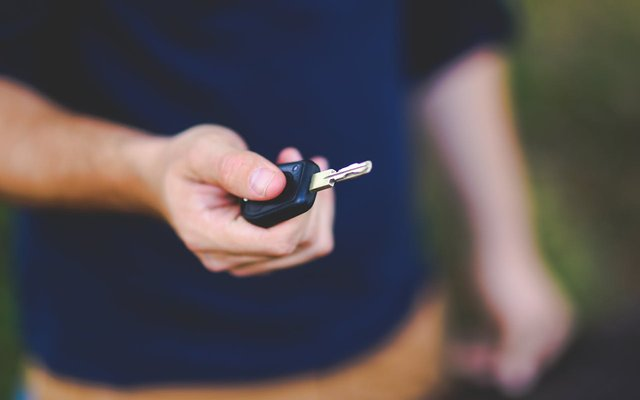
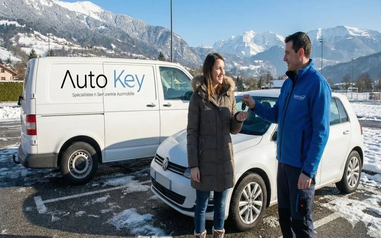

Guides pratiques, conseils d'experts et astuces pour tout savoir sur le double de clé de voiture, le dépannage clé perdue et la reprogrammation. Rédigés par les techniciens Auto-Key.

Combien coûte un double de clé en 2026 ? Tableau comparatif par marque et par type de clé, facteurs qui font varier le prix, et astuces pour économiser.
Lire l'article →
Guide étape par étape à suivre quand vous avez perdu votre clé de voiture sans double. Que faire, qui appeler, combien ça coûte et combien de temps ça prend.
Lire l'article →
Tout ce qu'il faut savoir pour refaire une clé Renault : prix par modèle (Clio, Mégane, Captur, Twingo), cartes mains-libres, solutions de reprogrammation.
Lire l'article →Un technicien Auto-Key est disponible du mardi au samedi pour vous conseiller et intervenir en Haute-Savoie.